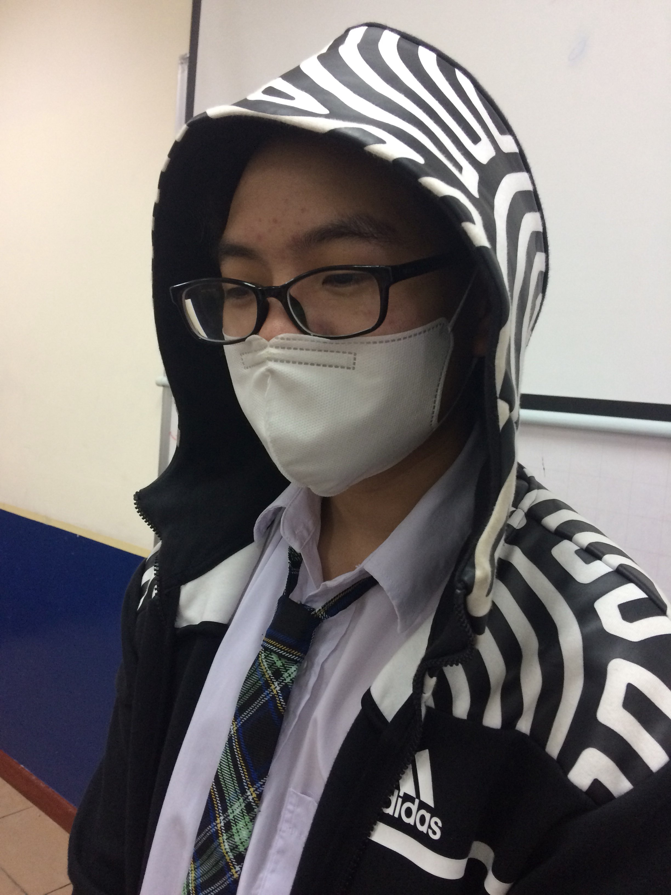
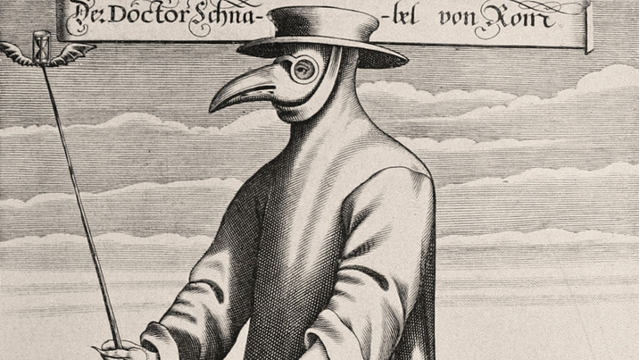
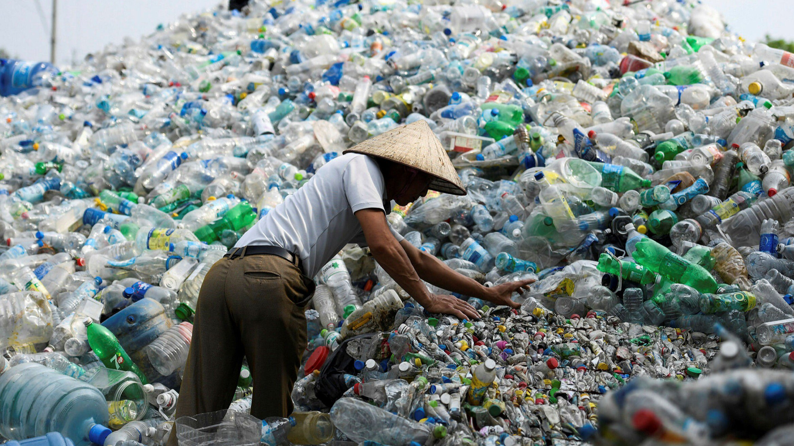
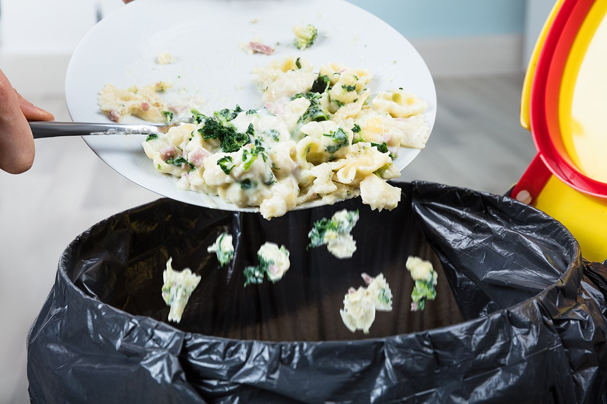
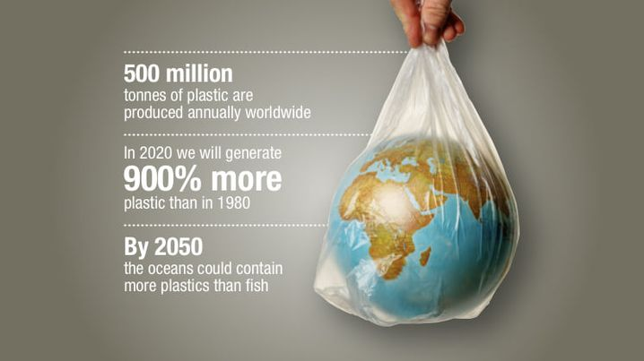
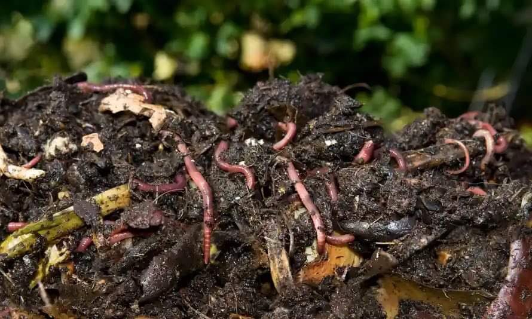
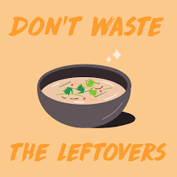
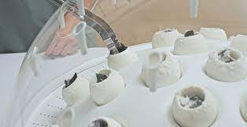

ABOUT US
We are APU students who are doing a project on plastic waste and food waste. This project is meant to help inform people about the amount of food waste and plastic waste in the world. The reason we are doing this project is because it's a school project. We all have different roles in this project like researchers, programmer, writer, and illustrator.
Justin
Quang
Khải

Richard
David
Our objective is to spread awareness on plastic and food waste. Mainly we want people to recycle plastic and not waste food. This way the large amount of plastic and food waste wouldn't get dumped into the ocean and can be used for other necessities. So as you know not many people in the world recycle and reuse, that is the reason why we are trying to convince more people to recycle and reuse.
HISTORY OF POLLUTION
Pollution is a problem that has existed for a long time. Indeed, it has been an issue since the dawn of society. The "Black Death" was a lethal disease carried by rats and spread by fleas in 1347. A horrible tragedy that wiped off 60% of Europe. Unsanitary conditions created by human and animal wastes, as well as garbage, triggered the outbreak. But pollution became a universal problem with rapid industrialization and the growth of human populations.
This is a video about the plastic from The Story of Stuff Project, you can visit their channel to see more videos like this:
CAUSE & EFFECT
Plastic waste and food waste has some major cause and effect on our environment.
First off we need to know what cause plastic waste and it is caused by negligence of recycling plastic and people littering, for example, the industry of any fast food brands for circumstances that their products have to fit in a small container that doesn't cost too much for their income profit and it is easy to use. The companies starts to put products in plastics due to it's flexibility in many environments and can keep it at the right conditions, so when the consumers had opened the package, it is then to be nothing but trash. Therefore many people throw them away without thinking about the cost of it while the brand would turn a blind-eye and kept on producing more plastic packaging to new customers. Food wastes on the other hand are mostly caused due to problems of the meal, there are many causes that newspaper writes about like how the market needs to take fault for the problem by their poor management but from the point of views of the consumers, most of food wastes situation are due to too much for one (or more) can eat, picky eating and disagreements between two sides (the cooker and the consumer).
 Plastic waste can cause major harm to the environment, humans, and the wildlife. The second type of pollution is food waste. It'll eventually produce a methane thats like the greenhouse gas thats more powerful than carbon dioxide. Due to food waste it'll cause the planet to warm up more and global warming will be more of a problem. Plastic waste causes harm to us humans, animals, and plants through toxic air pollutants which can have some bad side effects like birth defects, cancer, or other harmful disease.
SOLUTION
Food Waste
Worms are an excellent solution for organic waste, they are nature’s friendly (and harmless) decomposers. They accelerate the composting process, decrease the waste, and create valuable planting soil, with the soil, you can plant more easily for healthy house planted products. You can grow a lot not only consumables but also flower plants for house decorations. These worms can be found any where near a block of soil so it’s very easy to find them after a few minutes of scratching the ground or you can pour water on the ground (dirt) so they would eventually climb up. It’s recommended to benefit both you and the environment, use worms.
In South Korea, people are required to pay for the meals they do not finish. People waste a lot of food because it comes in so many different dishes and such huge amounts. It has gotten to the point that each individual wastes an average of 130 kg of food every year. To fix this issue, the government passed a law that penalizes people who waste food. If you have leftovers, you must place them in a special trash can and pay for them. The food waste there is collected and converted into biofuel, electricity, and animal feed. The law proved to be successful because food waste was reduced by 10% across the country. Every country should adopt this policy so that we can truly use all of the food we get.
Plastics Waste
PLASTIC-EATING MUSHROOM
"A darkly pigmented species of fungus, known as Aspergillus Tubingensis, has been found to contain agents that can degrade polyurethane (PU). Samantha Jenkins, lead biotech engineer for bio-manufacturing firm Biohm was studying different types of fungus in a research project, when she came across the plastic-eating fungus and found the fungus had eaten its way through the plastic sponge that was used to seal it. Jenkins is in the process of testing the fungus on PET and PU plastic and discovered the fungus to populate as it consumes more plastic, potentially creating a new source of biomaterial “for food, or feed stocks for animals, or antibiotics”."
BIN LESS RECYCLE MORE
Recycling preserves precious natural resources
Recycling items rather than using raw materials to make new things preserves the planet’s natural resources which, in the face of population growth and growing demand, won’t last forever.
It saves energy
Recycling materials uses less energy than extracting, processing, and transporting raw materials to make new products.
It causes far less harm to the environment and animals than extracting raw materials
Think about how raw materials are usually extracted, and what harm these activities might do to the earth. Mining, quarrying, logging, and fracking all cause harm to the planet by causing air and water pollution. These activities can also destroy precious animal habitats.
It reduces the amount of waste that is sent to landfill
Recycling more reduces the amount of waste we send to landfill. When waste sits rotting away on landfill, it leaches toxins into the groundwater and soil, and gives off greenhouse gases like methane as it decomposes, which contributes to global warming. Not only that, if recyclable items are sent to landfill, the precious raw materials and energy that went into making them are lost.
Recycling creates jobs
The more we recycle; the more jobs are created in recycling plants. There will also be more jobs created in recycling innovation and technology, new packaging and product design, and more as the industry develops.
A video from NowThis News:
REFERENCE
Plastic-eating mushroom10 scientific solutions to plastic pollution: Earth.org
11 easy ways to reduce your plastic waste. Treehugger.
Impulse, S. Solutions to plastic pollution: How to reduce plastic waste?
Nas Daily. "This Country Charges People For Wasting Food #123." YouTube
Bin less recycle more: recyclingbins